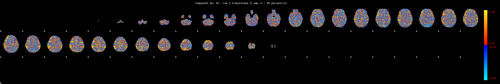
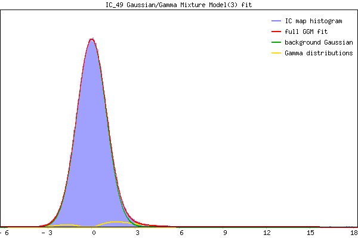

IC_49 Mixture Model fit
Means : 0.000000 2.436806 -1.978314
Vars : 1.000000 1.893614 0.597118
Prop. : 0.960744 0.030975 0.008280
This page produced automatically by MELODIC Version 3.15 - a part of FSL - FMRIB Software Library.